비서-1급 (2020-11-08 기출문제)
1과목: 비서실무
1. 다음 비서의 자질과 태도에 관한 설명 중 가장 적합하지 않은 것은?
- 다양한 사무정보 기기를 능숙히 다루기 위하여 많은 노력을 기울인다.
- 바쁜 업무시간 틈틈이 인터넷 강의를 들으며 외국어 공부를 한다.
- 평소 조직 구성원들과 호의적인 관계를 유지하기 위해 노력한다.
- 상사의 직접적인 지시가 없어도 비서의 권한 내에서 스스로 업무를 찾아 수행한다.
(정답률: 72%)

2. 아래는 전문 분야에서 일하고 있는 비서들의 경력개발 사례이다. 가장 적절한 것은?
- A: A씨는 국제기구의 사무총장 비서이다. 다음달에 상사가 국제회의에 참석하셔야 하므로 이에 대비해 해당 국가에 가서 연수를 받고자 급하게 한 달간의 단기 연수 교육신청을 하였다.
- B: B씨는 종합병원 원장 비서이다. 병원 조직의 효율적인 관리와 의사결정을 위해 의료 서비스 관련법과 행정매뉴얼을 숙지하려고 노력하고 있다.
- C: C씨는 대형로펌의 법률 비서이다. 법률상담 업무를 능숙하게 하기위해 법률관련 문서와 판례를 평소에 꾸준하게 읽고 있다.
- D: D씨는 벤처기업 사장 비서이다. 상사의 투자자를 찾아 내고 섭외하는 업무를 보좌하기 위해 투자관련 용어를 학습하고 있다.
(정답률: 48%)
3. 다음 중 전화응대 대화 내용으로 가장 적절한 것은?
- “안녕하세요, 이사님. 저는 상공물산 김영호 사장 비서 이인희입니다. 비 오는데 오늘 출근하시는데 어려움은 없으셨는지요? 다름이 아니고 사장님께서 이사님과 다음 주 약속을 위해 편하신 시간을 여쭈어보라고 하셔서 전화드렸습니다.”
- “안녕하세요, 상무님. 다음 주 부사장님과 회의가 있는데요, 부사장님은 목요일 점심, 금요일 점심에 시간이 나십니다. 부사장님은 목요일에 관련 회의를 하고 나서 상무님을 뵙는게 낫다고 금요일이 더 좋다고 하십니다. 언제가 편하신가요?”
- “전무님, 그럼 회의시간이 금요일 12시로 확정되었다고 사장님께 말씀드리겠습니다. 장소도 확정되면 알려 주십시오.”
- “상무님, 사장님께서 급한 일정으로 회의를 취소하게 되었습니다. 제가 사장님을 대신해서 사과드립니다.”
(정답률: 30%)
4. 다음 중 회의 용어를 올바르게 사용하지 못한 것은?
- “이번 회의는 정족수 부족으로 회의가 성원 되지 못했습니다.”
- “김영희 부장이 동의(動議)를 해 주셔서 이번 발의를 채택하도록 하겠습니다.”
- “동의를 얻은 의안에 대해 개의해 주실 분 있으신가요?”
- “이번 안건에 대해 표결(表決)을 어떤 식으로 할까요?”
(정답률: 44%)
5. 김비서의 회사는 현재 비전 컨설팅에 조직개발에 관해 컨설팅 의뢰를 해 둔 상태이다. 다음 대화 중 사장 비서인 김비서(A)의 전화응대 태도로 가장 적절한 것은?
- A: 안녕하십니까? 상공물산 대표실입니다.
B: 비전 컨설팅 김태호 대표입니다. 사장님 자리에 계십니까?
A: 무슨 용건이신지요? - A: 안녕하십니까? 상공물산 대표실입니다.
B: 비전 컨설팅입니다. 김태호 대표님께서 사장님과 통화를 원하시는데 사장님 계십니까?
A: 제가 먼저 연결하겠습니다. - A: 안녕하십니까? 상공물산 대표실입니다.
B: 비전 컨설팅 김태호 대표입니다. 사장님 계십니까?
A: 지금 외출 중이십니다. 사장님 돌아오시면 연락드리겠습니다. - A: 안녕하십니까? 상공물산입니다.
B: 비전 컨설팅 김태호 대표입니다. 사장님 계신가요?
A: 사장님은 통화중이십니다. 잠시만 기다리시겠습니까? 아니면 사장님 통화 마치시면 저희가 전화드릴까요?
B: 기다리겠습니다.
(정답률: 66%)
6. 다음은 비서의 내방객 응대에 관한 대화이다. 가장 부적절한 것은?
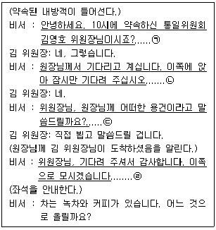
- ㉠
- ㉡
- ㉢
- ㉣
(정답률: 62%)
7. 상공기획(주) 이영준 대표이사는 중요한 업무 파트너인 서준희 회장님과 중식당에서 오찬을 마친 후 회사 회의실에서 1시간 정도 실무진 임원과 함께 미팅 예정이다. 김미소 비서가 내방객을 맞이하기 위한 준비 업무로 가장 적절치 않은 것은?
- 김비서는 상사의 회사 도착시각을 예측하기 위해 기사에게 사전에 오찬장소에서 출발할 때 연락을 하도록 부탁한다.
- 김비서는 서준희 회장의 내방객 카드를 찾아 평소 즐기는 차의 종류를 미리 확인하여 준비한다.
- 김비서는 상사와 서준희 회장이 회의실에 도착하기 전에 회의에 동석하기로 되어 있는 홍보 담당 전무에게 연락하여 회의실에 미리 와 있도록 한다.
- 회의자료는 회의 참석자에게 며칠 전에 이메일로 전송하였으므로 참석자에게 상사와 서준희 회장이 회의실에 도착하기 직전에 자료 확인 문자를 넣도록 한다.
(정답률: 60%)
8. 사무실에 자주 내방하시던 상사의 오랜 지인이 어느 날 강 비서에게 늘 도와줘서 감사하다며 함께 점심 식사를 하자고 하신다. 이에 대처하는 강 비서의 태도로 가장 바람직한 것을 고르시오.
- 감사하지만 다른 일정으로 참석이 어려움을 밝힌다. 이후 상사에게는 관련 사실을 보고한다.
- 상사 지인에게 단호하게 거절하며 불쾌함을 분명히 표현한다.
- 사내 여사원 온라인 게시판에 익명으로 관련 내용을 문의한다.
- 평소에 잘 알고 지내온 터라 편한 마음으로 식사를 함께 하며 상사에게는 특별히 언급하지 않는다.
(정답률: 65%)
9. 다음 중 상사의 교통편을 예약할 시, 가장 적절한 업무 태도는?
- 해외 항공권 예약 시에는 e-티켓으로 예약 확인하고 한 번 더 예약확인서를 문자로 요청하였다.
- 성수기로 항공권 예약이 어려울 것을 예측하여 우선 비서의 이름과 여권번호로 항공권 예약을 해서 좌석을 확보해 둔다.
- 상사가 선호하는 항공편의 좌석이 없을 때는 일단 다른 비행기를 예약하고, 상사가 원하는 항공편의 좌석이 나왔는지 수시로 확인한다.
- 상사가 동행인이나 관계자가 있는 경우, 상대방의 형편도 고려하여 출발시간을 잡아 예약한다.
(정답률: 37%)
10. 상사가 출장 출발 전에 비서가 확인해야 할 사항으로 가장 적절하지 않은 것은?
- 출장 중 상사 업무 대행자가 처리할 업무와 출장지의 상사에게 연락해야 할 업무 등을 구분하여 상사로부터 미리 지시를 받는다.
- 상사와 일정한 시간을 정해 놓고 전화 통화를 하거나 email, SNS 등을 이용하면 편리하게 업무보고와 지시를 받을 수 있다.
- 비서는 상사 출장 중에 그동안 밀렸던 업무를 처리한다.
- 상사 업무 대행자 지정은 상사가 출발한 후 조직의 규정에 따라 지정하면 된다.
(정답률: 48%)
11. 회사 50주년을 축하하는 기념식 행사를 준비하는 비서가 행사장의 좌석배치 계획을 수립할 때 다음 중 가장 부적절한 것은?
- 단상에 좌석을 마련할 경우는 행사에 참석한 최상위자를 중심으로 단 아래를 향하여 우좌의 순으로 교차 배치한다.
- 단하에 좌석을 마련할 경우는 분야별로 좌석 군을 정하는 것이 무난하여, 당해 행사의 관련성을 고려하여 단상을 중심으로 가까운 위치부터 배치한다.
- 단하에 좌석을 마련할 경우 분야별로 양분하는 경우에는 단상에서 단하를 바라보아 연대를 중심으로 왼쪽은 외부 초청 인사를, 그 오른쪽은 행사 주관 기관 인사로 구분하여 배치한다.
- 주관 기관의 소속 직원은 뒤에, 초청 인사는 앞으로 한다. 행사 진행과 직접 관련이 있는 참석자는 단상에 근접하여 배치한다.
(정답률: 40%)
12. 다음 중 한자어가 잘못 기입된 것은?
- 단자(單子): 부조나 선물 따위의 내용을 적은 종이
- 장지(葬地): 장사하여 시신을 묻는 장소
- 빈소(殯所): 상여가 나갈 때까지 관을 놓아두는 방
- 발인(發人): 상여가 떠나는 절차
(정답률: 29%)
13. 초청장에 명시된 복장규정의 설명이 맞지 않는 것은?
- business suit: 남성정장으로 색, 무늬, 스타일 등의 제한을 받는다.
- lounge suit: 남성 정장으로 조끼와 자켓을 갖추어 입는다.
- black tie: 예복으로 남성의 경우 검은 나비 타이를 착용한다.
- smart casual: 티셔츠에 면바지가 허용되는 편안한 복장이다.
(정답률: 42%)
14. 다음 중 보고 업무를 수행하고 있는 비서의 자세로 가장 적절하지 않은 것은?
- 위기에 처했을 때 보고하는 것도 중요하지만 평소에 중간보고를 충실히 하여 예측되는 문제를 미연에 방지한다.
- 업무 진행 상황을 자주 보고하여 상사가 일이 어느 정도 속도로, 또 어떤 분위기로 진행되고 있는지 알 수 있도록 한다.
- 업무의 절차적 당위성을 확보하기 위해 조직 내 공식적인 채널을 통해서만 보고한다.
- 업무 중간 중간에 상사의 의견을 물어 잘못되었을 경우 수정할 수 있는 시간을 갖는다.
(정답률: 56%)
15. 비서의 직업윤리와 그에 해당하는 상황 설명이 윤리에 적합한 것은?
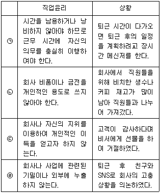
- ㉠
- ㉡
- ㉢
- ㉣
(정답률: 60%)
16. 마케팅부 이미영 비서는 '기업의 SNS 마케팅' 특강을 준비하였다. 특강비용처리와 관련하여 가장 적절하지 않은 것은?
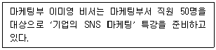
- 특강에 필요한 물품을 먼저 구입 후 12만원 비용처리를 위해 경리부에 간이영수증을 전달하였다.
- 특강료를 지급하기 위해 외부강사의 주민등록증과 은행계좌를 받아 원천징수한 금액을 외부 강사의 통장으로 입금하였다.
- 특강강사에게 3만원 이하로 선물을 준비하라는 사장님의 지시를 받고, 선물 구입 후 간이영수증을 제출하였다.
- 특강 후 상사와 강사, 그리고 특강 수강자들과의 저녁식사가 있어 법인카드를 사용하였다.
(정답률: 38%)
17. 다음은 상사의 해외 출장 일정이다. 상사의 일정을 관리하는 방법으로 가장 옳지 않은 것은?
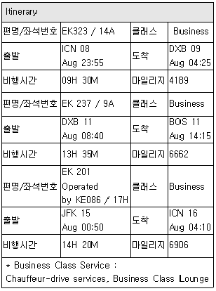
- 상사의 전체 출장일정은 ICN-DXB-BOS-JFK-ICN 일정으로 8박 9일이다.
- 상사의 DXB 체류 기간은 2박 3일로 여유가 있으므로 도착 당일인 8월 9일 이른 오전시간부터 업무 일정을 수립하지 않는 것이 바람직하다.
- 상사가 8월 11일 BOS 시내에서 오후 4시에 개최되는 행사의 Keynote Speech를 할 수 있도록 준비하였다.
- 상사가 8월 16일 새벽에 도착하므로 주요 일정을 오전에 수립하지 않았다.
(정답률: 47%)
18. 국회의원 비서로 일하고 있는 비서 A씨는 상사 의정 활동 홍보업무를 하고 있다. 다음 중 가장 적절한 것은?
- 보좌하고 있는 의원의 활동을 보도하기 위해 배포할 내용을 언론사의 배포 부서별로 선정을 해 두었다.
- 작성된 보도 자료는 보안을 위해 언론사에 직접 방문하여 제출하였다.
- 보도하고자 하는 내용은 최대한 상세하게 6하원칙에 의해 작성한다.
- 연설문, 기고문, 축사는 홍보의 내용이 아니므로 전문가의 의견까지 받을 필요가 없다.
(정답률: 42%)
19. 김비서의 업무용 프린터가 갑자기 고장 났다. 업무 지연을 방지하기 위하여 서둘러 구매하려고 한다. 다음 중 바르지 않은 것은?
- 지출결의서를 작성하여야 하는데, 지출결의서란 올바른 회계처리를 하기 위한 기초 자료임과 동시에 대표자나 경영진이 올바른 자금 집행을 하기 위한 중요한 서식이다.
- 업무용 프린터 구입이므로 일반 경비 지출 결의서에 작성한다.
- 매년 정기적으로 구매하는 프린터 용지, 프린터 토너 등의 구입 시에도 지출 요청일 최소 5일 이전에 결재 받아야 한다.
- 예산 한도 내에서 결제할 때는 결재 받을 필요가 없다.
(정답률: 58%)
20. 외국에서 중요한 손님이 우리 회사를 방문할 때 비서의 의전관련 업무 수행 시 적절하지 않은 것은?
- 외국 손님의 인적사항은 공식 프로필에서 확인하는 것이 원칙이다.
- 국가에 따라 문화가 다르므로 상호주의 원칙을 따른다.
- 의전 시 서열 기준은 직위이나 행사 관련성에 따라 서열기준이 바뀔 수 있다.
- 손님의 선호하는 음식이나 금기 음식을 사전에 확인하여 식당 예약을 한다.
(정답률: 37%)
2과목: 경영일반
21. 기업의 다양한 이해관계자에 대한 설명으로 가장 옳은 것은?
- 지역사회: 비즈니스 환경에서 동행하며 이들의 요구를 충족시키는 것은 기업 성공의 최고 핵심 조건이다.
- 파트너: 기업과 파트너십을 맺고 있는 협력업체와의 신뢰확보는 기업 경쟁력의 버팀목이다.
- 고객: 기업이 사업장을 마련하여 이해관계를 같이 하는 곳이다.
- 투자자: 기업을 믿고 지지한 주주로서 기업의 고객과 가장 가까운 곳에 위치한다.
(정답률: 41%)
22. 다음 중 기업의 공유가치창출(CSV) 활동의 사례로 보기에 가장 적절한 것은?
- 종업원들에게 경영참가제도와 복지후생제도를 도입 활용한다.
- 제3세계 커피농가에 합리적 가격을 지불하고 사들인 공정무역커피를 판매한다.
- 저소득층 가정의 학생들에게 아침밥을 제공한다.
- 제3세계 농부들에게 코코아 재배에 관한 교육을 제공하여 숙련도를 높이고 양질의 코코아를 제공받아 초콜릿을 생산한다.
(정답률: 40%)
23. 다음 중 협동조합에 관한 설명으로 가장 적절한 것은?
- 협동조합은 출자액의 규모와 관계없이 1인 1표의 원칙을 갖고 있다.
- 협동조합은 영리를 목적으로 설립한 공동기업의 형태이며 조합원들에게 주식을 배당한다.
- 소비자협동조합은 비영리 조합원 소유의 금융협동체로서 조합원들에게 대출 서비스를 주요 사업으로 한다.
- 협동조합은 소수 공동기업으로 운영되며 이익이나 손실에 대해 조합장이 유한책임을 진다.
(정답률: 31%)
24. 협상을 통해 두 기업이 하나로 합치는 인수 합병(M&A)은 '실사 – 협상 – 계약 – 합병후 통합' 과정을 거치는 데, 각 단계에 대한 설명으로 가장 옳은 것은?
- 실사: 기업의 인수합병계약 전 대상기업의 재무, 영업, 법적현황 등을 파악하는 절차
- 협상: M&A 과정중 가장 중요한 단계로 계약서를 작성하는 단계
- 계약: 계약 체결을 위해 대상기업과의 교섭 단계
- 합병후 통합: 대상기업과의 인수가격, 인수형태 등 법적 절차를 협상하는 단계
(정답률: 47%)
25. 다음 중 기업의 외부환경분석 중 포터(M. Porter)의 산업구조 분석모형에서 다섯 가지 세력(5-Forces)에 해당하지 않는 것은?
- 기존 산업 내 경쟁 정도
- 공급자의 협상력
- 신규 시장 진입자의 위협
- 정부의 금융·재정정책
(정답률: 29%)
26. 대기업과 비교할 때 중소기업의 특징에 대한 다음 설명 중 가장 옳지 않은 것은?
- 자금과 인력의 조달이 어렵다.
- 경영진의 영향력이 커서 실행이 보다 용이하다.
- 규모가 작아 고용 증대에 큰 기여를 하지 못한다.
- 환경의 변화에 보다 신속하게 대응할 수 있다.
(정답률: 32%)
27. 경영 조직화의 설명 중 가장 거리가 먼 것은?
- 조직화의 의미는 부서수준에서 부장, 과장, 대리 등으로 직무를 설계하여 업무가 배분되고 조정되도록 하는 것을 의미한다.
- 조직화 과정에는 일반적으로 계획된 목표달성을 위해 필요한 구체적인 활동을 확정하는 단계가 있다.
- 구체적인 활동이 확정되면 개개인이 수행할 수 있도록 일정한 패턴이나 구조로 집단화시키는 단계가 있다.
- 조직화란 과업을 수행하기 위해 구성원과 필요한 자원을 어떻게 배열할 것인가를 구상하는 과정이다.
(정답률: 23%)
28. 다음 중 조직구조의 유형에 관한 설명으로 가장 적합하지 않은 것은?
- 유기적 조직은 환경이 급변하고 복잡한 경우 기계적 조직보다 적합하다 할 수 있다.
- 기계적 조직은 유기적 조직에 비해 집단화 정도와 공식화 정도가 높다.
- 유기적 조직은 직무내용이 유사하고 관련성이 높은 업무를 우선적으로 결합하여 업무의 전문성을 우선시하는 조직이라 할 수 있다.
- 라인(line)구조는 조직의 목표 달성에 직접적인 책임을 지고 있는 기능을 가지고 있다.
(정답률: 34%)
29. 민쯔버그가 제시한 경영자의 역할 중에서 종업원을 동기부여하는 역할로서 가장 적절한 것은?
- 정보적 역할
- 대인적 역할
- 의사결정적 역할
- 협상자 역할
(정답률: 36%)
30. 다음 중 리더십이론에 대한 설명으로 가장 적절하지 않은 것은?
- 블레이크와 모튼의 관리격자이론에서 (1.9)형은 과업형 리더유형이다.
- 피들러는 리더십의 결정요인이 리더가 처해있는 조직 상황에 있다고 주장한다.
- 허쉬와 블랜차드는 부하의 성숙도가 가장 높을 때는 지시형 리더보다는 위임형 리더가 더 효과적이라고 제안한다.
- 번즈의 변혁적 리더십은 카리스마, 지적자극, 개별적 배려로 구성되어 있다.
(정답률: 29%)
31. 다음 중 유한회사의 설명으로 가장 거리가 먼 것은?
- 유한회사의 사원은 의결권 등에서는 주식회사와 유사하다.
- 50인 이하의 유한책임사원과 무한책임사원으로 구성된다.
- 주식회사보다는 자본규모가 작고 출자지분의 양도도 사원총회의 승인을 받아야 한다.
- 소수의 사원과 소액의 자본으로 운영되는 중소기업에 적당한 기업형태이다.
(정답률: 35%)
32. 경영의사결정이 어려운 이유를 설명한 것 중 가장 거리가 먼 것은?
- 의사결정과 관련된 문제의 복잡성, 모호성, 가변성 등으로 문제를 정확하게 파악하기 어렵다.
- 의사결정과 관련된 기초자료의 불확실성, 주변환경과의 불확실성, 의사결정 후의 불확실성 등으로 의사결정이 어렵다.
- 의사결정과정은 문제인식, 결정기준의 명시, 대안 도출, 대안평가, 대안 선정의 과정을 포함한다.
- 다양한 선택기준으로 대안을 비교할 때 하나의 기준이 아닌, 기업의 이익, 비용, 규모, 이미지 등 여러 요소를 고려해야 하기에 의사결정이 어렵다.
(정답률: 29%)
33. 다음의 내용은 무엇에 대한 설명인가?
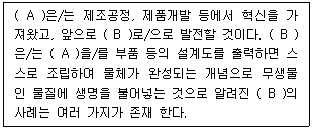
- A- ERP, B- CRM
- A- ERP, B- ES
- A- 3D프린팅, B- 자율자동차
- A- 3D프린팅, B- 4D 프린팅
(정답률: 45%)
34. 인사관리 중 선발의 경우, 면접 시 생길 수 있는 오류의 설명 중 바르게 설명된 것은?
- 현혹효과는 후광효과라고도 하는데, 이는 한 측면의 평가결과가 전체 평가를 좌우하는 오류를 말한다.
- 관대화경향은 평가할 때 무조건 적당히 중간 점수로 평가하여 평가치가 중간에 치중하는 현상을 나타나게 하는 오류이다.
- 스테레오타입오류는 피그말리온효과라고도 하는데, 자기충족적 예언을 의미한다.
- 다양화오류는 사람들이 경험을 통한 수많은 원판을 마음에 가지고 있다가 그 원판 중에 하나라도 비슷하게 맞아떨어지면 동일한 것으로 간주해버리는 오류를 의미한다.
(정답률: 33%)
35. BSC(Balanced Score Card) 인사평가에서 균형이란 성과평가에서 재무적·비재무적 성과를 모두 균형있게 고려한다는 것이다. 재무적 성과와 비재무적 성과를 고려하는 BSC 평가관점이 아닌 것은?
- 재무적 성과: 고객 관점
- 재무적 성과: 재무 관점
- 비재무적 성과: 외부 프로세스 관점
- 비재무적 성과: 학습과 성장 관점
(정답률: 29%)
36. 다음 중 기업에서 활용되는 다양한 마케팅 활동에 대한 설명으로 가장 적합하지 않은 것은?
- 디마케팅(demarketing)은 자사 제품이나 서비스에 대한 수요를 일시적 또는 영구적으로 감소시키려는 마케팅이다.
- 퍼미션(permission)마케팅은 같은 고객에게 관련된 기존상품 또는 신상품을 판매하는 마케팅이다.
- 자극(stimulation)마케팅은 제품에 대한 지식이나 관심이 없는 소비자에게 자극을 주어 욕구를 가지게 하는 마케팅이다.
- 바이럴(viral)마케팅은 네티즌들이 이메일이나 다른 전파매체를 통해 자발적으로 제품을 홍보하는 메시지를 퍼트리는 것을 촉진하는 마케팅이다.
(정답률: 43%)
37. 포괄손익계산서 보고서 양식은 다음과 같다. 각 과목에 대한 산정방식으로 옳지 않은 것은?
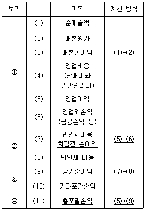
- (3) 매출총이익 = (1)-(2)
- (7) 법인세비용 차감전 순이익 = (5)-(6)
- (9) 당기순이익 = (7)-(8)
- (11) 총포괄손익 = (5)+(9)
(정답률: 32%)
38. 다음 중 아래의 설명이 나타내는 용어로 가장 적합한 것은?
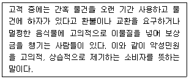
- 블루슈머
- 레드슈머
- 트윈슈머
- 블랙컨슈머
(정답률: 53%)
39. 다음 중 아래와 같은 상황을 뜻하는 용어로 가장 적절한 것은?
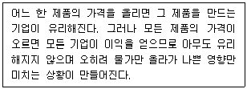
- 구성의 오류
- 매몰비용의 오류
- 인과의 오류
- 도박사의 오류
(정답률: 23%)
40. 은행이 고객으로부터 받은 예금 중에서 중앙은행에 의무적으로 적립해야 하는 비율을 일컫는 용어는?
- 현금통화비율
- 현금비율
- 지급준비율
- 본원통화
(정답률: 34%)
3과목: 사무영어
41. Which pair is NOT proper?
- 도착 서류함 - in-tray
- 연필깎이 - sharpener
- 소화기 - fire end
- (회사명이 들어있는) 편지지 - letterhead paper
(정답률: 40%)
42. Choose the one which does NOT correctly explain the abbreviations.
- MOU: Merging of United
- IT: Information Technology
- CV: Curriculum Vitae
- M&A: Merger and Acquisition
(정답률: 31%)
43. Choose the sentence which does NOT have a grammatical error.
- First, let me congratulate you the rapid growth of your operation.
- I'm pleased to learn of the succession you have been.
- He will be scheduled an appointment with you within a few day.
- I would like to arrange an appointment with you so that we can go over any questions you might have.
(정답률: 18%)
44. What is INCORRECT about the following envelope?
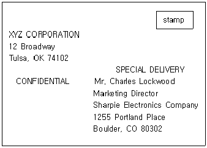
- 수신인은 마케팅 이사인 Charles Lockwood이다.
- 이 서신은 빠른우편으로 배송되었다.
- 이 서신의 내용은 인비이므로 Lockwood가 직접 개봉해야 한다.
- 이 서신의 발송지는 미국 Oregon주이다.
(정답률: 44%)
45. What is the LEAST correct information about the below fax?
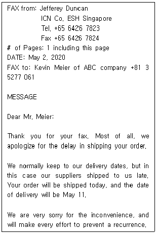
- ICN Co. has had a business with ABC company.
- Kevin Meier is expected to get the ordered goods on May 2.
- The main purpose of this fax is to apologize for the delay and inform the delivery date.
- Kevin Meier must have sent a fax to ask for the shipment of his order.
(정답률: 28%)
46. Which of the following is the MOST appropriate expression for the blanks ⓐ, ⓑ, and ⓒ?
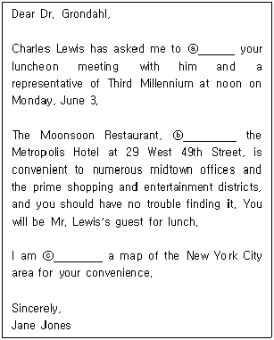
- ⓐ cancel ⓑ placed in ⓒ sending
- ⓐ confirm ⓑ located in ⓒ enclosing
- ⓐ remake ⓑ to be placed ⓒ attaching
- ⓐ call off ⓑ located on ⓒ forwarding
(정답률: 40%)
47. Which is NOT true according to the following Mr. Smith's itinerary?
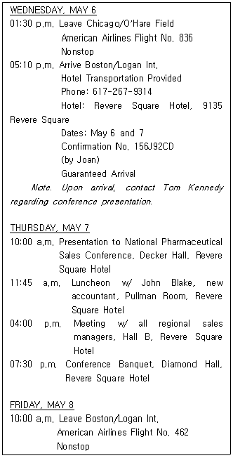
- 스미스씨는 2박 일정으로 Revere Square 호텔을 예약하였다.
- 호텔 예약과 관련하여 문제가 발생했을 경우는 Joan과 연락하면 된다.
- 연회는 저녁 7시 30분에 Pullman Room에서 개최될 예정이다.
- 스미스씨는 수요일 오후 1시 30분 시카고 오헤어 공항을 떠나는 일정이다.
(정답률: 42%)
48. Fill in the blanks with the BEST ones.
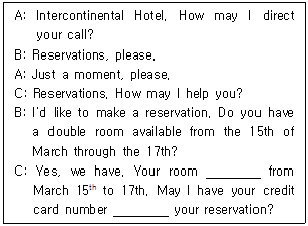
- is booked - to guarantee
- booked - to confirm
- is booked - for reconfirming
- booked - for making
(정답률: 27%)
49. Which English sentence is LEAST proper for the given Korean meaning?
- 이사회에 정성어린 축하를 전해주시기 바랍니다. → Please pass on our kindest wishes to the board of directors.
- 귀사의 주요 고객 중 한 분인 Mr. Anderson 씨에게 귀사에 대해 들었습니다. → I've heard about your company from Mr. Anderson, one of your major clients.
- 용도에 맞게 쓰시라고 전자 상품권을 발행해 드렸습니다. → An electronic voucher has issued for your use.
- 귀하가 우리 대리점에서 겪으신 불편에 대해 알고 염려가 되었습니다. → We were concerned to learn that you have experienced an inconvenience in our agency.
(정답률: 25%)
50. What is LEAST proper as a phrase for ending the conference?
- Can we have a quick show of hands?
- Let's try to keep each item to 15 minutes.
- Thank you for coming and for your contributions.
- I think we've covered everything on the agenda.
(정답률: 28%)
51. Choose the MOST appropriate expression.
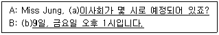
- (a) when is the board meeting scheduled?
(b) On the 9th, Friday at 1:00 p.m. - (a) when is the board meeting scheduling?
(b) On Friday, the 9th at 1:00 p.m. - (a) when does the board meeting scheduling?
(b) In the 9th, Friday at 1:00 p.m. - (a) when has the board meeting been scheduled?
(b) By Friday, the 9th at 1:00 p.m.
(정답률: 34%)
52. What is MOST appropriate expression for the underlined part?
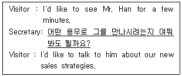
- May I ask why you wish to see him?
- May I ask why do you wish to see him?
- May I ask the reason you wish to see him about?
- May I ask the reason do you wish to see him?
(정답률: 18%)
53. Among the phone conversations, which is LEAST proper?
- A: Is this Bill speaking?
B: No, it isn't. He is not in right now. - A: I'm sorry, may I ask who's calling, please?
B: I'm afraid Jaeho Kim doesn't work here. - A: Hello, is this Sinae Travel Service?
B: I'm sorry. You have the wrong number. - A: May I take a message for him?
B: No, thanks. I will call later.
(정답률: 33%)
54. According to the followings, which is LEAST true?
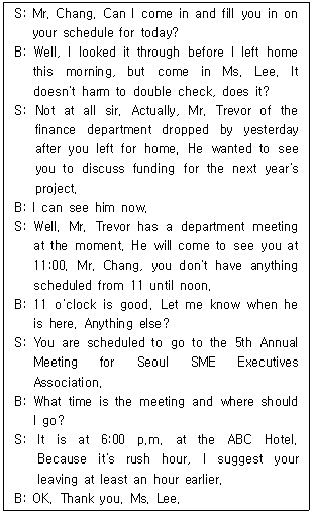
- Mr. Chang will leave for ABC Hotel around 5 o'clock.
- Mr. Trevor wanted to see Mr. Chang yesterday, but he couldn't.
- Mr. Chang already looked through today's schedule this morning.
- Ms. Lee is Mr. Trevor's secretary.
(정답률: 23%)
55. Which of the following is the MOST appropriate expression for the blank?
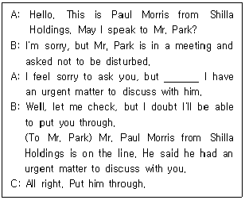
- please ask him to be on the line now.
- could you please interrupt him for me?
- please tell him Mr. Morris on the line.
- I will wait for a while.
(정답률: 25%)
56. What kind of letter is this?
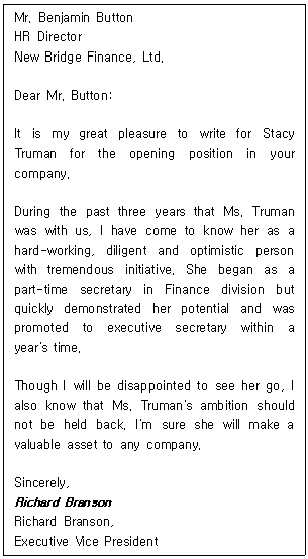
- Condolence Letter
- Congratulatory Letter
- Resignation Letter
- Recommendation Letter
(정답률: 32%)
57. Which of the followings is MOST appropriate for the blank?
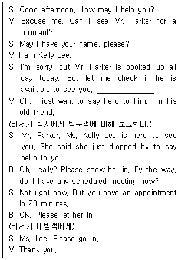
- May I take your message?
- May I ask what the business is?
- May I ask your name and the nature of your business?
- May I have your contact number just in case?
(정답률: 30%)
58. According to the following conversation, which one is NOT true?
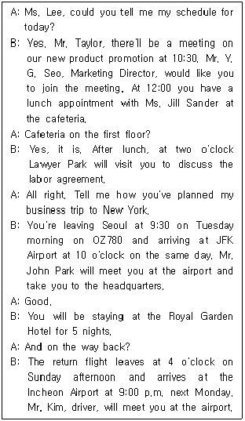
- Mr. Taylor has a meeting at 10:30 regarding new product promotion.
- Mr. Taylor has a lunch appointment with Ms. Jill Sander at the cafeteria on the first floor today.
- Mr. Taylor will fly to New York on a business trip.
- Mr. John Park will stay at the Royal Garden Hotel for 5 days.
(정답률: 34%)
59. What is the main purpose of the following contents?
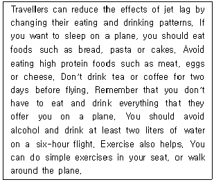
- Rule of conduct on a plane
- Effective Diet Method
- How to avoid jet lag
- How to keep your health
(정답률: 36%)
60. Choose one pair of dialogue which does NOT match each other.
- A: It's a little bit early for dinner but would you like to have something?
B: Why don't we have a sandwich? - A: Do I have any meetings tomorrow?
B: I'll let you know the schedule for tomorrow. - A: Do you have any particular brand of car in mind?
B: No, but I'm looking for a compact car. - A: Is there some sort of a landmark you can tell me about?
B: You can take a taxi, but it's within walking distance.
(정답률: 32%)
4과목: 사무정보관리
61. 다음은 공문서 작성 시 항목(1., 2., 3., 4., …)을 구분하여 작성하는 방법이다. 항목 작성 시 표시위치와 띄어쓰기에 관한 설명이 가장 적절하지 않은 것은?
- 첫째 항목기호는 왼쪽 처음부터 띄어쓰기 없이 왼쪽 기본선에서 시작한다.
- 하위 항목부터는 상위 항목 위치에서 오른쪽으로 2타씩 옮겨 시작한다.
- 항목이 한줄 이상인 경우에는 항목 기호(1., 2., 3., 4., …) 위치에 맞추어 정렬한다.
- 항목이 하나만 있는 경우 항목기호를 부여하지 아니한다.
(정답률: 24%)
62. 다음 중 소통성을 높이고 정확한 표현 사용을 위한 공공언어 바로 쓰기에 맞춰 올바르게 수정되어 변경된 것은?
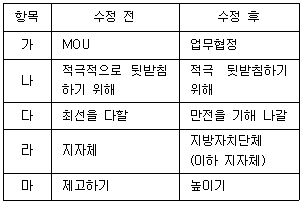
- 가, 나, 다, 라, 마
- 가, 다, 라, 마
- 가, 나, 다, 마
- 가, 라, 마
(정답률: 34%)
63. 다음 중 문서의 종류에 대한 설명이 가장 적절하지 못한 것은?
- 공문서 중 비치문서는 민원인이 행정 기관에 허가, 인가, 그 밖의 처분 등 특정한 행위를 요구하는 문서와 그에 대한 처리 문서를 뜻한다.
- 비서실에서는 거래 문서보다 초대장, 행사 안내문, 인사장, 축하장, 감사장 등과 같은 문서의 비중이 높은 편이다.
- 전자 문서 시스템, 사무용 소프트웨어 뿐 아니라 홈페이지 게시 등과 같이 작성되는 문서도 전자 문서에 속한다.
- 문서 작성 소프트웨어에 의해 작성되었다고 하더라도 인쇄되어 종이의 형태로 유통된다면 종이 문서라고 할 수 있다.
(정답률: 27%)
64. 다음 중 문장부호의 사용이 가장 올바르지 않은 것은?
- ≪영산강≫은 사진집 <아름다운 우리나라>에 실린 작품이다.
- 이번 회의에는 두 명[이혜정(실장), 박철용(과장)]만 빼고 모두 참석했습니다.
- 내일 오전까지 보고서를 제출할 것.
- “설마 네가 그럴 줄은….” 라고 경수가 탄식했다.
(정답률: 29%)
65. 다음과 같이 감사장을 작성하고 있다. 아래에서 메일머지의 데이터를 이용해서 작성하는 것이 더 효율적인 것이 모두 포함된 것은?
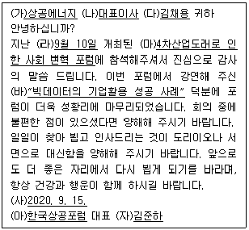
- (나), (다), (바), (사)
- (라), (마), (아), (자)
- (가), (나), (다), (바)
- (가), (나), (다), (마)
(정답률: 32%)
66. 다음은 상사가 해외 출장 후 박비서에게 전달한 명함이다. 정리순서대로 올바르게 나열한 것을 고르시오.
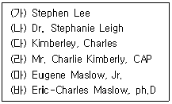
- (나)-(바)-(마)-(다)-(라)-(가)
- (다)-(라)-(가)-(나)-(바)-(마)
- (라)-(바)-(마)-(다)-(나)-(가)
- (다)-(라)-(나)-(가)-(마)-(바)
(정답률: 27%)
67. 다음 전자문서에 대한 설명으로 가장 올바르지 않은 것은?
- 비서실에서 종이문서를 일반스캐너를 이용하여 이미지화한 문서는 종이 문서와 동일하게 법적 효력을 인정받는다.
- 전자문서는 특별규정이 없는 한 전자적인 형태로 되어 있다는 이유로 문서로서의 효력이 부인되지 않는다.
- 전자문서는 일반 문서 작성용 소프트웨어를 사용하여 작성, 저장된 파일도 해당한다.
- 전자적 이미지 및 영상 등 디지털 콘텐츠도 전자문서에 해당한다.
(정답률: 27%)
68. 다음 보기를 읽고 최문영 비서가 문서를 효율적으로 관리하기 위해 1차적으로 어떤 문서 정리방법을 이용하는 것이 가장 적절한 지 고르시오.
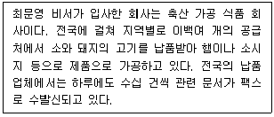
- 거래 회사명으로 명칭별 분류법
- 거래 회사 전화번호로 번호식 문서정리방법
- 부서별로 주제별 문서정리방법
- 거래 회사 지역별로 명칭별 분류법
(정답률: 42%)
69. 공공기관의 전자문서에 대한 설명이 가장 적절하지 않은 것은?
- 전자이미지서명이란 기안자·검토자·협조자·결재권자 또는 발신명의인이 전자문서상에 전자적인 이미지 형태로 된 자기의 성명을 표시하는 것을 말한다.
- 전자문자서명이란 기안자·검토자·협조자·결재권자 또는 발신명의인이 전자문서상에 자동 생성된 자기의 성명을 전자적인 문자 형태로 표시하는 것을 말한다.
- 전자문서는 업무관리시스템 또는 전자문서시스템에서 전자문자서명을 하면 시행문이 된다.
- 전자문서의 경우에는 수신자가 관리하거나 지정한 전자적시스템에 입력됨으로써 그 효력을 발생하는 도달주의를 원칙으로 한다.
(정답률: 23%)
70. 프레젠테이션을 위한 올바른 슬라이드 작성 방법으로 가장 적절하지 않은 것은?
- 프레젠테이션 슬라이드는 기본적으로 시각 자료이며 텍스트와 그림을 전달내용에 맞추어 적절하게 구성하는 활동이 중요하다.
- 프레젠테이션 슬라이드는 서론, 본론, 결론의 단계성보다는 도형과 그림 중심으로 시각화하는 것이 중요하다.
- 시각 자료의 양은 발표 분량이나 시간을 고려하여 결정되어야 하며 효과적으로 배치하여야 한다.
- 프레젠테이션을 구성하는 주제, 내용, 시각자료 등은 논리적 연관관계가 치밀해야 한다.
(정답률: 44%)
71. 다음 비서의 정보 수집 방법이 가장 적절하지 않은 것은?
- 강비서는 상사의 지인에 관련한 부음을 신문에서 보고 해당인물의 비서실에 전화를 걸어서 확인하였다.
- 민비서는 보고서 작성을 위해 사내 인트라넷을 이용하여 1차 관련자료를 수집한 후 외부자원을 위해서 추가 자료를 수집하였다.
- 정비서는 웹자료를 검색할 때에 정보의 질이 우수하여, 출처가 불분명한 글을 인용하였다.
- 박비서는 인터넷검색이 불가능한 오래된 귀중본 열람을 위해서 소장여부 및 열람가능여부 확인 후 도서관에 직접 방문하였다.
(정답률: 45%)
72. 다음은 데이터베이스 관련 용어이다. 용어에 대한 설명이 가장 적절하지 못한 것은?
- Big Data: 데이터의 생성 양, 주기, 형식 등이 기존 데이터에 비해 너무 크기 때문에, 어려운 대량의 정형 또는 비정형 데이터로 이로부터 경제적 가치를 추출 및 분석할 수 있는 기술이다.
- DQM: 데이터베이스의 최신성, 정확성, 상호연계성을 확보하여 사용자에게 유용한 가치를 줄 수 있는 수준의 품질을 확보하기 위한 일련의 활동이다.
- null: 데이터베이스를 사용할 때, 데이터베이스에 접근할 수 있는 데이터베이스 하부 언어를 뜻하며 구조화 질의어라고도 한다.
- DBMS: 데이터베이스를 구축하는 틀을 제공하고, 효율적으로 데이터를 검색하고 저장하는 기능, 응용 프로그램들이 데이터베이스에 접근할 수 있는 인터페이스 제공, 장애에 대한 복구, 보안 유지 기능 등을 제공하는 시스템이다.
(정답률: 36%)
73. 다음 그래프는 한중 교역량 추이와 중국 입국자 및 한국 관광수지 변화를 보여주는 그래프이다. 이 그래프를 통하여 알 수 있는 내용 중 가장 올바른 정보는?
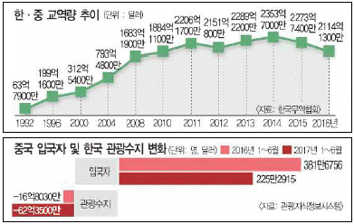
- 한·중 교역 규모는 2016년 2114억 1300만 달러로 1992년 교역 규모 대비 33배 축소되었다.
- 관광지식정보시스템 자료에 따르면 한·중 교역 규모가 가장 컸던 때는 2014년이였다.
- 2017년 상반기 방한 중국인은 225만 2915명으로 전년 동기 대비 증가했다.
- 관광수지 적자폭도 2017년 상반기에 전년동기 16억 8030만 달러에서 62억 3500만 달러로 커졌다.
(정답률: 28%)
74. 사물인터넷에 대한 설명으로 잘못된 것은?
- 사물인터넷(Internet of Things, IoT)은 사물 등에 센서를 달아 실시간으로 데이터를 수집하고 주고받는 기술이다.
- IoT라는 용어는 1999년에 케빈 애쉬튼이 처음 사용하기 시작했다.
- 보안 취약성, 개인정보 유출 등에 관한 우려가 존재하여 이에 대한 대응이 요구된다.
- IoT에 관련한 국제표준이 부재하여 시장 전망에 비해 시장확대 속도가 느린 편이다.
(정답률: 42%)
75. 다음은 USB 인터페이스에 대한 설명이다. 가장 적절하지 못한 것은?
- USB 2.0에 비해 USB 3.0 버전은 빠른 데이터 전송이 가능하다.
- USB 인터페이스는 전원이 켜진 상태에서도 장치를 연결하거나 분리, 혹은 교환이 가능한 간편한 사용법이 특징이다.
- USB 3.0 버전은 USB 2.0 버전과 구별하기 위해 보라색 포트사용을 권장하고 있다.
- 별도의 소프트웨어 설치 없이도 상당수의 USB 장치(키보드, 마우스, 웹캠, USB 메모리, 외장하드 등)들을 간단히 사용할 수 있다.
(정답률: 43%)
76. 복지 정책 관련 보고서를 작성하고 있는 김비서는 복지 관련 민원접수에 대한 다음 표를 작성했다. 아래 표를 읽고 유추할 수 있는 사실과 거리가 가장 먼 것은?
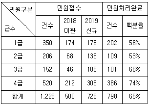
- 위 데이터를 이용해 민원접수건수 전체 중 각 급수의 비중을 나타내는 차트로 가장 적절한 차트는 세로 막대형 차트이다.
- 3급 민원 접수 건중 2018년도에서 이월된 비율은 약 30% 정도이다.
- 민원처리완료 비율이 가장 높은 순서는 4급-3급-1급-2급순이다.
- 평균 민원 처리율은 65%이다.
(정답률: 31%)
77. 다음은 외국환율고시표이다. 표를 보고 가장 적절하지 못한 분석은?
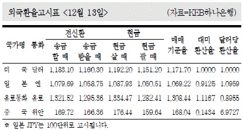
- 전신환으로 송금하는 경우 현금으로 살 때보다 돈이 덜 든다.
- 미화 100달러를 현금으로 팔아서 받은 돈으로 엔화 10,000엔을 송금하면 돈이 남는다.
- 10,000위안을 송금받은 돈으로 2,000달러를 현금으로 사는 경우에 돈이 부족하다.
- 대미환산율을 기준으로 볼 때 1.1167유로가 1달러에 해당한다.
(정답률: 21%)
78. 우편봉투 작성 시 사용한 경칭의 예시가 맞는 것을 모두 고르시오.
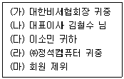
- (가), (나), (다), (라), (마)
- (나), (다), (라), (마)
- (가), (라), (마)
- (다), (마)
(정답률: 25%)
79. 다음 중 사이버 보안위협 내용으로 옳은 것을 모두 고르시오.
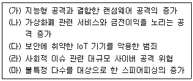
- (가)-(나)-(마)
- (가)-(나)-(다)-(마)
- (가)-(나)-(다)-(라)
- (나)-(다)-(라)
(정답률: 30%)
80. 아래의 애플리케이션 중 그 성격이 다른 한 가지는?
- 드롭박스
- 구글 드라이브
- 스카이프
- 마이크로소프트 원드라이브
(정답률: 47%)